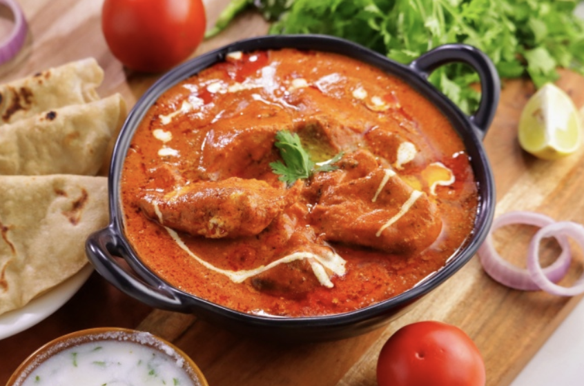
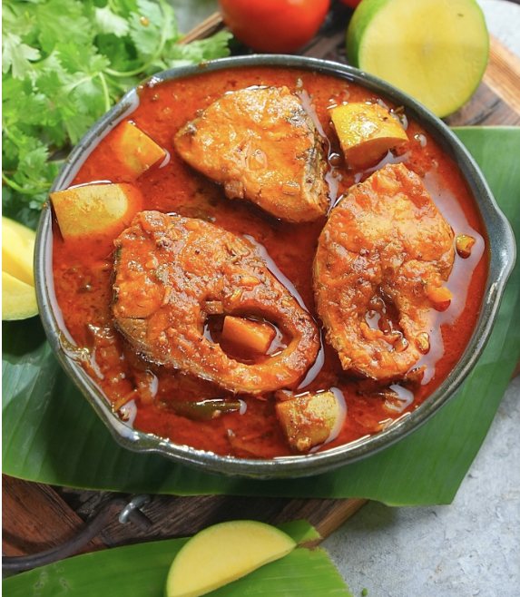

Home
|
Non-Vegetarian Recipes
Search

Butter Chicken
Butter Chicken is a rich and creamy North Indian curry made with marinated chicken cooked in a spiced tomato-based gravy. It is flavored with butter, cream, and aromatic spices, making it a popular and indulgent dish.
Curries
Prawns Pulao
Prawns Pulao is a fragrant and flavorful rice dish made with prawns, aromatic spices, and basmati rice, cooked to perfection. It is enriched with a homemade spice powder, ghee, and a hint of lemon, making it a delicious and satisfying meal.
Flavored Rice

Nellore Chepala Pulusu
Chepala Pulusu is a traditional South Indian fish curry made with tamarind, spices, and fresh fish, offering a tangy and spicy flavor. It is slow-cooked to perfection, allowing the fish to absorb the rich and aromatic gravy.
Curries
Andhra Chicken Fry
Andhra Chicken Fry, also known as Kodi Vepudu, is a popular South Indian dish known for its rich flavors and spicy taste. This dish is made with tender chicken pieces marinated in aromatic spices and cooked to perfection with a unique blend of roasted masalas.
Curries
Omelette
An easy and quick dish, perfect for any meal. This classic omelette combines beaten eggs cooked to perfection, optionally filled with your choice of cheese, vegetables, or meats.
Starters
>>
1
2
<<